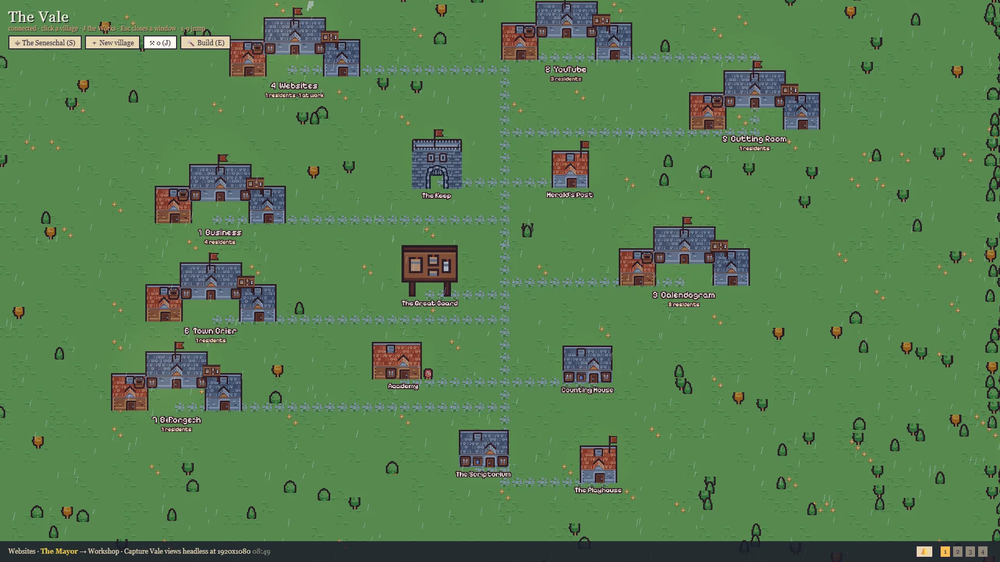
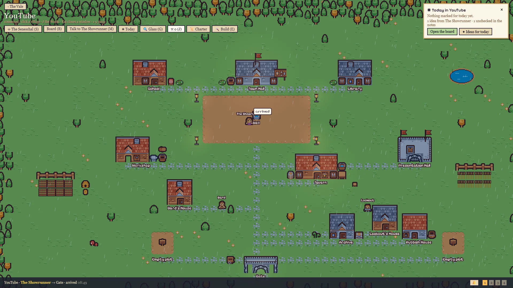

The Vale
By Roko Grga
A pixel-art village where my AI agents live and work.
Every Claude Code project I run is a village. Every agent is a resident, every house is a folder, and they only walk to work when real work happens.
Private for now: the Vale runs on my own PC. Maybe one day it's yours too.
Explore
Walk around the Vale
A dashboard that looks like a game, and you can do real work in it. These are real screenshots: tap any place on the map to see what happens there.


Drag the map sideways to see all of it.
Nothing on these maps is staged. They move only when the agents work.
Devlog 1
I Gave My AI Agents a Village to Work In
The first devlog: what the Vale is, why I built it, and the agents at work inside it. New videos and live streams come every week.
▶ Follow on YouTubeWatch the Vale grow
New villages, new crafts and the mistakes along the way: 2 live streams and 2 long videos every week on YouTube. Want to try the Vale when it opens, or talk AI agents? Write to me.
The Vale is private for now and runs on my own PC. Maybe one day it's yours too.